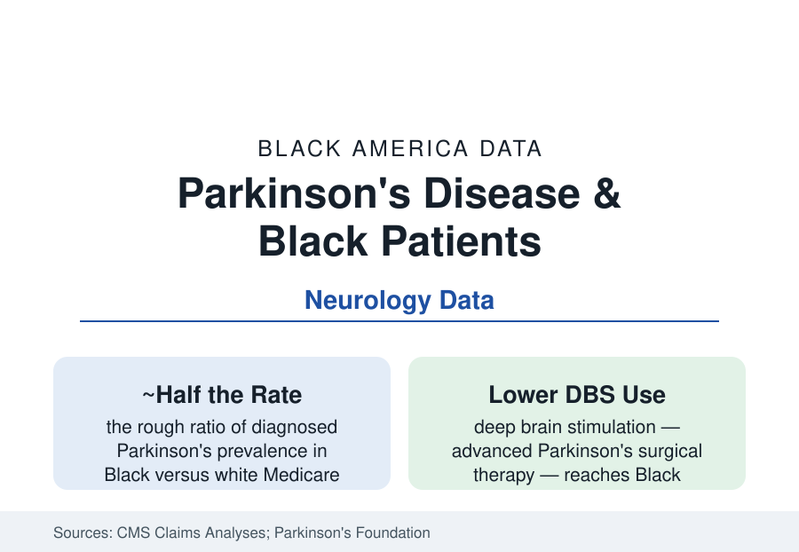

Black Public Health
Parkinson's Disease in Black Americans: The Diagnosis That Arrives Late
Diagnosed Parkinson's rates run lower in Black Medicare data — while the symptoms walk into clinics unrecognized for years. The neurology file on a quiet disease.

Parkinson's disease enters the Black health data through a paradox the neurology literature has circled for two decades: the diagnosed prevalence in Black Medicare beneficiaries runs at roughly half the white rate in the major claims analyses — a figure that would make Parkinson's a 'protective' outlier in this entire section, except that every investigation of the gap concludes the protection is substantially an artifact. The tremors and the gait changes are there; the diagnoses, the specialist referrals, and the treatments lag behind them. This article reports the movement-disorder file.
The Diagnosis Gap: Symptoms First, Labels Years Later
The clinical studies draw the pathway: Black patients with Parkinsonian symptoms present later in the disease course in the movement-disorder clinic records, carry higher rates of initial misdiagnosis (the symptoms attributed to arthritis, stroke after-effects, diabetes, or aging itself in the chart-review studies), and reach the neurologist — the diagnostician who can name it — at lower rates through the referral funnel (the primary-care gatekeeping data pattern of the whole access file). The community-based studies that examined people rather than claims found the hidden prevalence: door-to-door and cohort examinations in mixed populations detecting undiagnosed Parkinsonism in Black elders at rates that close much of the claims gap — the disease present, the label absent. The presentation differences the literature debates (tremor-dominant versus gait-dominant subtypes' distribution, the dementia comorbidity rates recorded higher in Black Parkinson's patients in the clinic cohorts — plausibly the same late-diagnosis artifact wearing another mask) all read downstream of the one measurement: who gets seen by someone who recognizes it, and when.
Treatment: The Medication and Surgery Ledgers
The treatment data continue the funnel: levodopa — the foundational, inexpensive, six-decade-old therapy — reaches diagnosed Black patients at reasonable rates in the pharmacy claims, but the advanced therapies fall off the gradient in sequence: the specialty adjunct medications (with their prior-authorization and cost gauntlets), referral to the movement-disorder subspecialists (concentrated in academic centers, their wait lists and geographies in the access data), and deep brain stimulation surgery, whose recipient pool in the national procedure analyses is whiter than the diagnosed population by a wide margin — the DBS funnel (awareness, referral, evaluation, the neuropsychological screening stage where disparities in completion compound) audited stage by stage in the disparities literature like the transplant funnel in this section's pages. The rehabilitation tier (physical, occupational, and speech therapy — the LSVT and exercise programs with real functional evidence) shows the same referral gradient in the claims. The research file completes it: Black participants at two to three percent of Parkinson's trial enrollment in the registry analyses — the genetic era's GBA and LRRK2 science built, like the Alzheimer's file, on a fraction of the population it will eventually treat.
Caregiving, Dementia, and the Long Middle
Parkinson's is a decades-long disease of the household as much as the patient, and its care data run through the caregiving file: the spouses and adult children (in Black families, disproportionately daughters and the kin networks of the grandparents article) managing the medication clocks, the fall risks (the fracture data in Parkinson's cohorts), the driving decisions, and the dementia that joins the disease in a large share of long courses — Parkinson's dementia stacking onto the Alzheimer's section's entire ledger of diagnosis and care disparities. The support infrastructure (the Parkinson's Foundation's chapter network, the boxing and dance exercise programs with their devoted Black participant communities in the cities where they run, the faith-community health ministries) reaches the diagnosed; the file's standing inequity is that reaching any of it requires the diagnosis first — the label is the key to the whole building, and the key arrives late.
Reading the Parkinson's Data
Half the recorded rate, later at every milestone, underrepresented in the trials, under-referred for the surgery: the Parkinson's file is the health section's case study in how a disease without a biomarker hides inside a healthcare gradient — invisible in the claims precisely because the claims are where the invisibility happens. The door-to-door studies found the patients the system missed. The data's verdict is that they were never missing. They were waiting, unrecognized, in the waiting rooms of the ordinary system — which is to say, in exactly the places this atlas keeps counting.
More in Black Public Health
Hypertension Among Black Adults: Prevalence, Control, and Consequences
About 55 percent of Black adults have hypertension — the highest rate of any U.S. group. Prevalence, onset, control, and the stroke, heart, and kidney consequences in the data.
Diabetes Among Black Adults: Prevalence and Complications
Nearly one in five Black adults has diabetes, diagnosed or undiagnosed — and its complications fall with particular weight. The CDC data on prevalence, control, and outcomes.
Black Life Expectancy: The Gap at Birth and Its Causes
Black life expectancy at birth is about 73 years, roughly five years below the national figure — the summary measure of every health gap in this section. The CDC data.
Source: Centers for Medicare & Medicaid Services claims analyses; Parkinson's Foundation; Movement Disorder Society; American Academy of Neurology; National Institute of Neurological Disorders and Stroke.